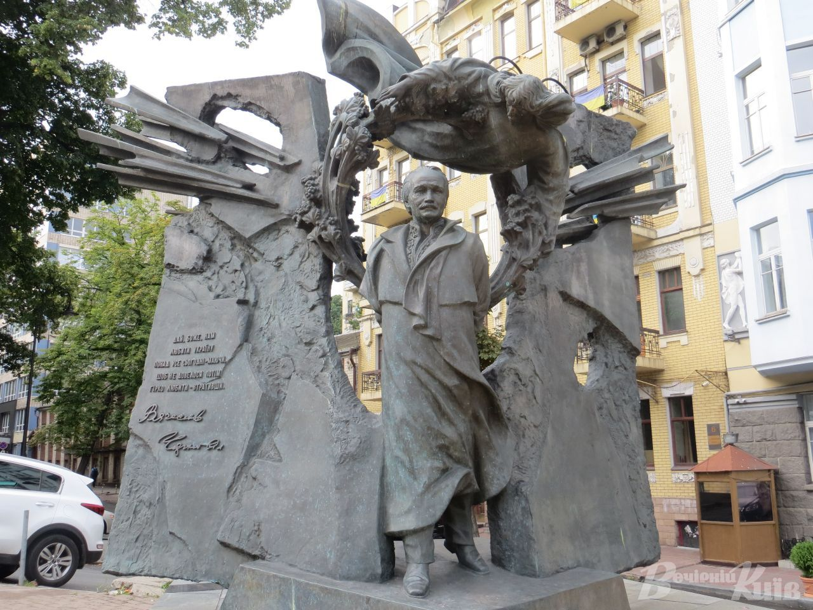

«Все, що мав, він віддав для одної ідеї, і горів, і яснів, і страждав, і трудився для неї», – ці слова Великого Каменяра з поеми «Мойсей» сповна характеризують видатного провідника українського національнодемократичного визвольного руху кінця 80х90х рр.; Героя України, ініціатора проголошення Декларації про державний суверенітет України та Акту проголошення Незалежності, самовідданого борцяреволюціонера В’ячеслава Чорновола. В. Чорновіл – людина глибокої вдачі, потужної культури й розумної напруги, людина на всі часи. Шкода‚ що це стало зрозумілим тільки після його загибелі. Він став національним Героєм України посмертно.

Скупий перелік біографічних даних без його живого обличчя‚ стрімкої ходи‚ дивовижно привабливої швидкої мови‚ рідкісної чарівності не дає пояснення тому‚ чому він піднявся над усіма. Він був абсолютно незвичайною людиною‚ але неможливо передати‚ у чому ж полягала його незвичайність. Він був запальним і спокійним‚ неймовірно м’яким і досить жорстким‚ грізним і добрим‚ радісним і сумним‚ але головною його рисою була неймовірна терпимість на фоні феноменальної реакції і гострого язика. Ці несумісні якості якраз і робили його видатним політичним діячем у справах державних‚ і цілком незахищеним у звичайному житті… Він міг до безмежності терпіти образи‚ якщо це стосувалося його особисто‚ але ніколи не мовчав‚ якщо це стосувалося України.
Пам’ятаймо його слова: «Україна починається з тебе!» Нехай В. Чорновіл, як непересічна, яскрава особистість нашої історії, людина високих моральних чеснот, гідний патріот, у якого Слово і Діло завжди підпорядковувались високій ідеї – ідеї відродження Української державності і служіння українському народові, завжди буде прикладом для наслідування для кожного свідомого українця!